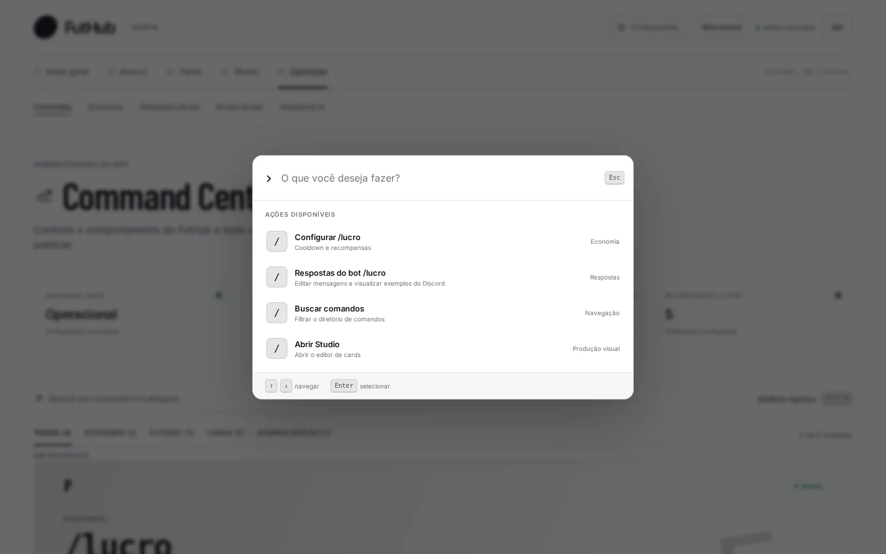
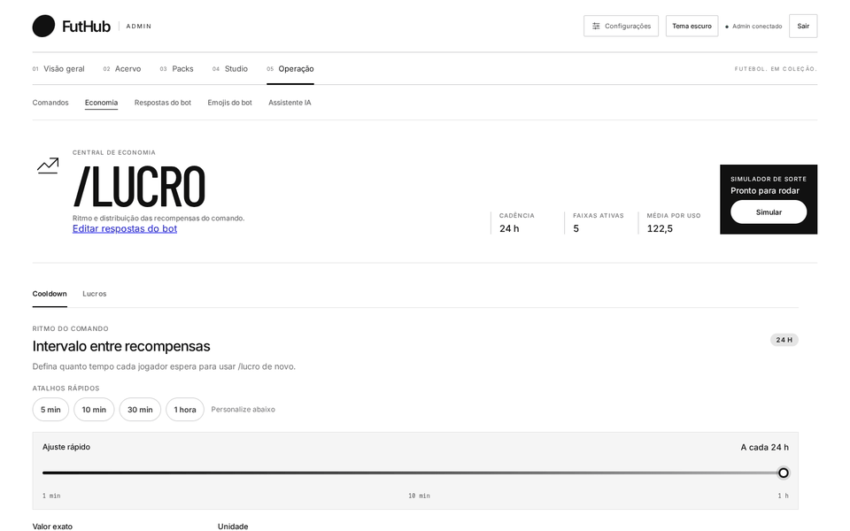

Início / Casos de uso / Economia
Caso 02
Moeda demais, graça de menos.
Em duas semanas, metade do servidor tem todos os cards da edição. Abrir pack virou rotina. O problema não está nos packs, está na torneira de moedas.
Você abre o Command Center: bot operacional, um comando ativo e cinco faixas de recompensa no /lucro. Com Ctrl K, vai direto para “Configurar /lucro”.

A aba Lucros mostra o quadro: a média por resgate está em 122,5 moedas. A faixa comum paga 50 com metade da chance, mas as faixas altas ainda pesam. Você reduz o peso das faixas raras e a distribuição ao vivo recalcula a chance e a média na hora.

Na aba Cooldown, o painel de impacto mostra quantas moedas por dia um jogador ativo junta. Você mantém o intervalo e rola o simulador de sorte algumas vezes para sentir a nova distribuição.

Mudança de economia sem aviso gera reclamação. Em Respostas do bot, você ajusta a mensagem do “Lucro resgatado” para mostrar o saldo e o horário do próximo resgate ({balance} e {availableAt}) e confere na prévia do Discord.

Resultado: menos moedas entrando, com cada mudança testada antes e uma mensagem clara para os jogadores. Tudo em meia hora e sem deploy.
FutHub Admin
Tudo que o jogo precisa, num painel só.
Do elenco real ao card no Discord: importe, desenhe, embale, precifique e publique sem abrir o código nem o banco.